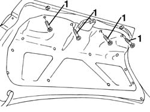
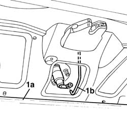
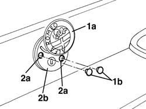
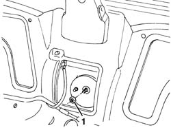
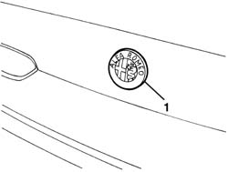

7055A80 rear ornament - r r
- Path
- Procedures > 70 FITTINGS > 7055 MOULDING AND PROTECTION > 7055A exterior mouldings > 7055A80 rear ornament - r r
- Kind
- repair procedure (removal / refitting; the operation number is the code)
- Applies to
- all engines; all production periods
- Interactive page
- https://sloeber94.github.io/elrnDB-a156/en/#/3238954
Applies to: all engines; all production periods
 Removing
Removing
 Refitting
Refitting1. Open the boot lid and undo the bolts fixing the inner lining.

Applies to: all engines; all production periods
1. Lower the inner lining (1a) and disconnect the rod (1b) from the lock.

Applies to: all engines; all production periods
1. Turn crest (1a) and prise out both plugs (1b) protecting the retaining bolts.
2. Use a drift to unscrew both self-tapping screws (2a) securing crest (2b) and remove.

Applies to: all engines; all production periods
Remove the retaining clip.
Insert the key in the lock barrel and remove.
Applies to: all engines; all production periods
Refitting
RemovingCheck that the lock barrel and the crest are not damaged.
Fit the retaining spring into its seat.
Fit the lock barrel into its seat until the groove engages with the retaining clips.
Fit the lock barrel assembly and secure using two new self-tapping screws.
Connect the lock rod to the lock barrel.
Test the lock barrel to ensure it works properly.
Position the inner trim and secure it using the bolts.
Applies to: all engines; production: da 03/02 a 09/03, da 10/03
Removing
Refitting1. Undo the nut securing the badge.

Applies to: all engines; production: da 03/02 a 09/03, da 10/03
1. Remove the badge from the outside.

Applies to: all engines; production: da 03/02 a 09/03, da 10/03
Refitting
RemovingCheck that the crest is undamaged.
Position the badge and fasten it using the nut.